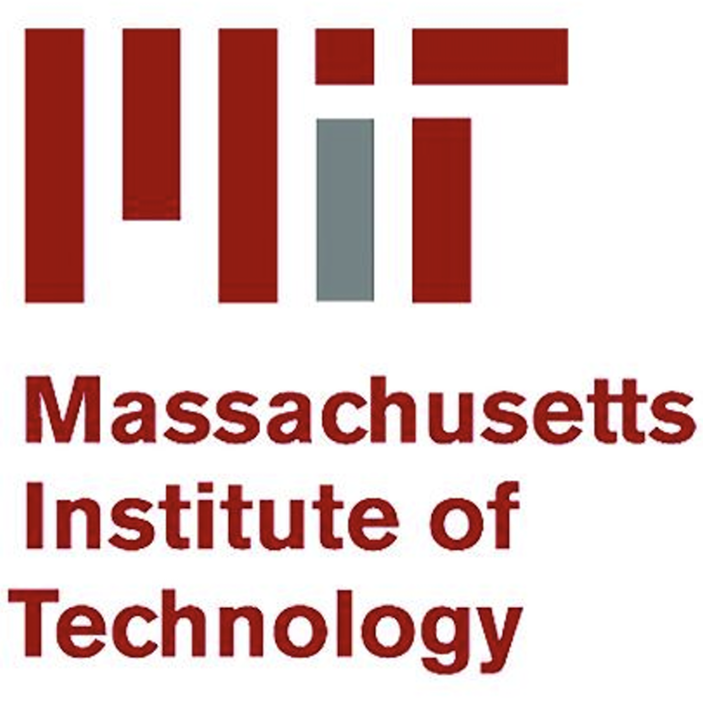
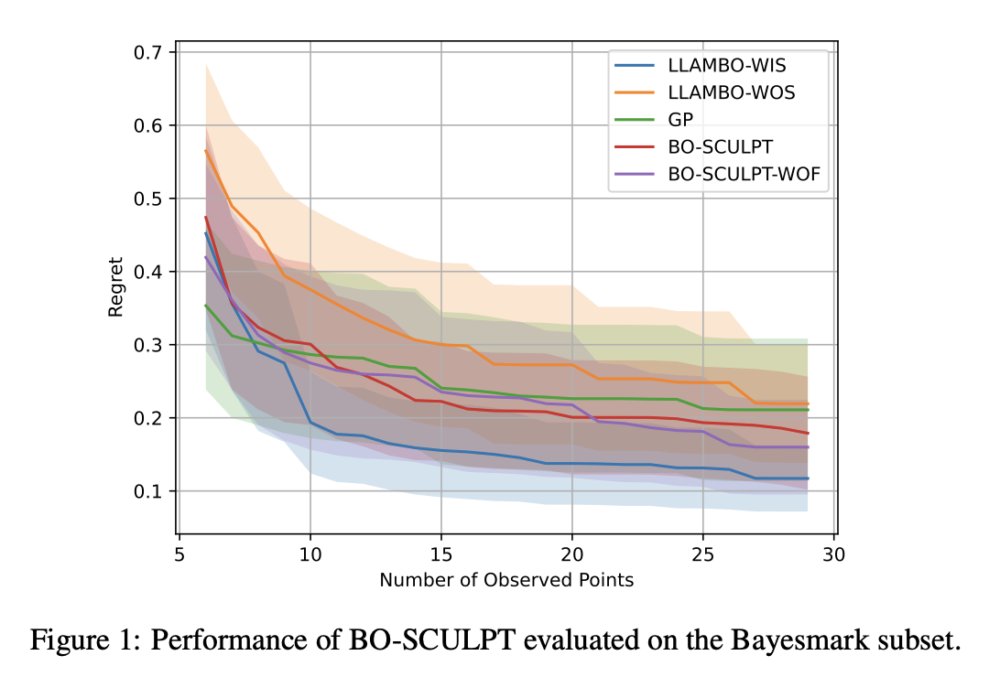
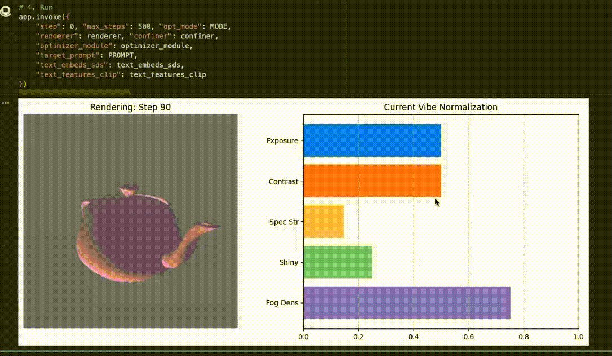

|
I am a CS Ph.D. student in at University of Maryland, College Park. Previously, I earned both my Bachelor’s and Master’s degrees in
Engineering Science and
Computer Science from National Taiwan
University, where I worked closely with
Prof. Yu Tsao and Prof.
Hsin-Min Wang.
During that period, my research primarily centered on
machine learning for audio and speech modalities. I focused on improving robustness to diverse acoustic environments
(ICLR'23 &
ASRU'23) and on
how such robustness can be continually learned and adapted over time
(Interspeech'20 &
Interspeech'22).
|
|
|
|  |
Research Collaborator
Jul. 2023 – present
Improbable AI Lab at Massachusetts Institute of Technology Advisor: Pulkit Agrawal |

|
Research Assistant
Mar. 2019 – Mar. 2024
Bio-ASP Lab at Academia Sinica CITI, Taiwan Advisor: Yu Tsao |

|
Visiting Researcher
Nov. 2022 – Feb. 2023
Yamagishi Laboratory at National Institute of Informatics, Japan Advisor: Prof. Junichi Yamagishi |
|
(∗ indicates equal contribution) |

|
Chi-Chang Lee*, Zhang-Wei Hong*, Pulkit Agrawal Conference on Neural Information Processing Systems (NeurIPS), 2024 Paper | OpenReview | Video | Code |
|
|
Srinath Mahankali*, Chi-Chang Lee*, Gabriel B. Margolis, Zhang-Wei Hong, Pulkit Agrawal International Conference on Robotics and Automation (ICRA), 2024 Paper | Website | Code |
|
|

|
Chi-Chang Lee, Yu Tsao, Hsin-Min Wang, Chu-Song Chen International Conference on Learning Representations (ICLR), 2023 Paper | Code |

|
Chi-Chang Lee, Hong-Wei Chen, Chu-Song Chen, Hsin-Min Wang, Tsung-Te Liu, Yu Tsao IEEE Automatic Speech Recognition and Understanding Workshop (ASRU), 2023 Paper | Code |

|
Chi-Chang Lee, Cheng-Hung Hu, Yu-Chen Lin, Chu-Song Chen, Hsin-Min Wang, Yu Tsao INTERSPEECH, 2022 Paper | Website | Code |

|
Chi-Chang Lee, Yu-Chen Lin, Hsuan-Tien Lin, Hsin-Min Wang, Yu Tsao INTERSPEECH, 2020 Paper | Code |
|
|
|  |
This is a 14-day side project in 2025 that aims to expand in-context learning for Bayesian optimization by introducing a reference policy and a policy-improvement view. I target two goals: (1) acquiring improvement / convergence support via constrained updates relative to the reference policy, and (2) replacing domain-specific task descriptions (e.g., dataset/model info in hyperparameter tuning) with task-agnostic statistical signals produced by the reference policy (e.g., mean/uncertainty summaries), improving scalability to unseen BO tasks. Paper | Code |
|  |
We study unpaired text-to-appearance inverse rendering, where a differentiable renderer is optimized using only text prompts, without any reference images. Since direct CLIP-based optimization from text is often vague and under-constrained, we introduce vision–language feedback as an optimization confiner. The VLM (1) augments ambiguous textual descriptions into concrete, parameter-aware instructions and (2) determines which scene parameters should be updated, while simultaneously tightening feasible ranges for all parameters. This guidance stabilizes optimization and improves prompt adherence and visual clarity compared to naive CLIP-only methods. Paper | Code |
|
|
|
Teaching Assistant, Machine Learning, National Taiwan University, Taiwan 2021 Fall |
|
Teaching Assistant, Time Frequency Analysis and Wavelet Transforms, National Taiwan University, Taiwan 2018 Fall |
|
|
|
Second Place, IC/CAD Contest 2019 |
|
template from jonbarron |